10 Validating scientific software
So far I have focused very heavily on reproducibility, that is, the ability to generate the same answer when code is run repeatedly. However, it’s easy to reliably generate the wrong answer! In measurement theory there is a fundamental distinction between reliability and validity: Reliability means performing the same method repeatedly results in highly similar results, whereas validity refers to whether the estimated result is close to the true result. In this chapter we turn to the validation of scientific software, by which I mean the degree to which it performs the intended task as expected and gets the answers right.
10.1 Creating simulations
Creating simulations is perhaps the most important tool that computers offer the scientist, as captured in a well-worn quote by (Press 1992):
offered the choice between mastery of a five-foot shelf of analytical statistics books and middling ability at performing statistical Monte Carlo simulations, we would surely choose to have the latter skill. (p.691)
Simulations are indeed a powerful way to understand a system even when it’s not analytically tractable. More importantly, they are generally the only way that we can establish ground truth against which we can compare our models. We can generate data where we know the answer, run our analysis on those simulate data, and make sure that the analysis provides us with the correct answer. As scientists we never know the true process that generates our data, but with simulations we can have complete control over the data generation process.
My previous book, Statistical Thinking (Poldrack 2023), gives an overview of how to use simulations in the context of statistics; here I will focus primarily on the use of simulation in the context of software validation, but I recommend that book for background reading if you aren’t already familiar with the concept of a statistical distribution.
10.1.1 Generating random numbers
The most fundamental requirement in nearly any simulation is the ability to generate random numbers.1 What makes a series of numbers random is that it is impossible (or at least nearly impossible) to predict the next value in the series. Random numbers are defined by the distribution that characterizes them, which is a mathematical function that describes the “shape” of the data when they are summarized according to the relative frequency of different values or ranges of values. Picking the correct distribution is essential to ensure that any simulation performs as advertised. Fortunately, there are lots of existing packages that provide tools to generate random numbers for nearly any distribution; I will focus on the NumPy package here since it is the most commonly used.
The simplest distribution is the uniform distribution, in which any possible value (within a particular range for continuous values) has the same probability of occurring. We can generate uniform random variates by first creating a random number generator object using np.random.default_rng(), and then calling rng.uniform() which returns random samples from the distribution:
>>> rng = np.random.default_rng()
>>> rng.uniform(size=10)
array([0.2540087 , 0.5284475 , 0.32548277, 0.74116308, 0.82750185,
0.11758439, 0.06351991, 0.24068558, 0.87900871, 0.36374554])In this case, rng.uniform() by default generates floating point values that fall within [0, 1]; this can be changed using the location and scale parameters to the function. If we generate a large number of these then we can create a distribution plot (often called a histogram) showing how the numbers are distributed, as shown in Figure 1.1.
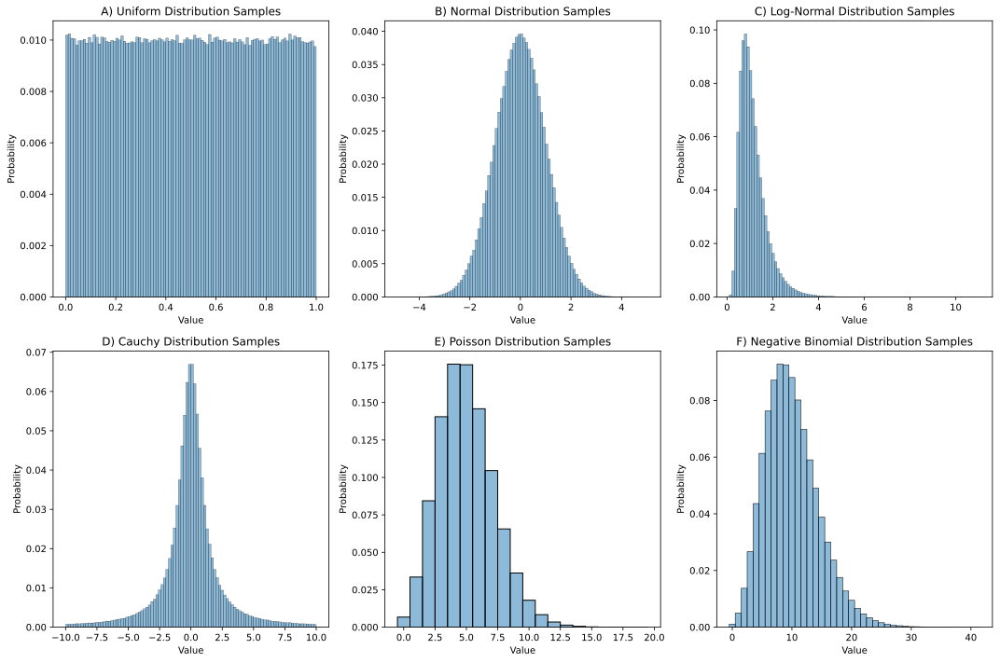
For purposes of reproducibility it’s often useful to be able to regenerate exactly the same series of random samples. We can do this by specifying a random seed, which gives the random number generating a starting point. If you are going to do simulations then it is important to understand the specific random number generator that your code will use. Previously it was common to use the global NumPy random seed function (np.random.seed()) to set the seed, and this is still necessary when using packages that access the global random number generator. However, the best practice is to generate a random number generator object (using np.random.default_rng()), and then call the methods of that object to obtain random numbers, as I did above. This prevents surprises in case other functions modify the global seed, helps isolate your specific generator, and enables multiple parallel generators. Here is an example:
>>> rng = np.random.default_rng(seed=42)
>>> rng.uniform(size=4)
array([0.77395605, 0.43887844, 0.85859792, 0.69736803])If we run this again, we see that a different series of numbers is generated:
>>> rng.uniform(size=4)
array([0.09417735, 0.97562235, 0.7611397 , 0.78606431])However, if we generate another object with the same seed, we will see that it gives us the same values as above:
>>> rng2 = np.random.default_rng(seed=42)
>>> rng2.uniform(size=4)
array([0.77395605, 0.43887844, 0.85859792, 0.69736803])
>>> rng2.uniform(size=4)
array([0.09417735, 0.97562235, 0.7611397 , 0.78606431])Setting random seeds is important to enable exact reproducibility of results generated using random numbers. However, it’s also important to ensure that one’s results are robust to the choice of random seed, as I will discuss later in the context of machine learning analyses.
10.1.2 Choosing a distribution
Choosing the right distribution for a simulation often comes down to understanding the data-generating process and kind of data that are being modeled. Here are a few examples of distributions and their common use cases:
Discrete outcomes
Bernoulli: A distribution of binary outcomes (often interpreted as success vs failure) given a probability of a positive outcome.
- Examples: Whether a patient responds to a given treatment, whether a hard drive fails within a particular period of time.
Binomial: A distribution of the number of successes across a specific number of Bernoulli trials, given a probability of a positive outcome.
- Examples: The number of patients who respond to treatment in a clinical trial treatment group, the number of hard drives that fail within a particular period of time at a particular data center
Categorical: A distribution with several distinct possible outcomes, each of which has a particular probability:
- Examples: Eye color across a population, programming languages used by programmers in a company
Uniform: A specific form of a discrete categorical variable with equal probability
- Examples: equiprobable physical outcomes such as a dice roll.
Multinomial: A multivariate generalization of the binomial, representing the counts of multiple possible outcomes across a set of independent trials with fixed probabilities of each outcome.
- Examples: Frequencies of types of stars in a galaxy, frequencies of cell types in a tissue sample
Continuous outcomes:
Uniform: A distribution with equal probability density for all values within the range.
- Examples: probabilities of events when there is no prior knowledge, equiprobable continuous physical outcomes
Beta: A generalization of the uniform distribution that models the probability of values within a range but has two parameters that allow different values across the range to have different probabilities.
- Examples: Prior probabilities in a Bayesian model, proportions of time spent in a particular state.
Normal (or Gaussian): A symmetric distribution centered around a mean, which commonly arises when an outcome is generated based on many small additive contributions. The Central Limit Theorem explains why this occurs so frequently, as it should arise for sums of independent random variables sampled from any distribution, as long as the sample size is large enough and the distribution has finite variance.
- Examples: Height of individuals in a population, measurement errors for continuous variables
Log-normal: Distribution of positive continuous values whose logarithm is normally distributed. It reflects the expected values of a product of independent random variables.
- Examples: Wealth and income distributions in a population, biological growth processes
Count data:
Poisson: This is a distribution of counts of events within a fixed interval assuming that the events are independent and occur at a constant rate. Unlike the binomial there is no limit on the number of events that can occur, and it is the limiting case of the Binomial when the sample size \(n\) approaches infinity and the probability \(p\) approaches zero (and \(n * p\) remains constant).
- Examples: The number of atoms decaying within a particular period, the number of emails that a person receives within a day
Negative binomial: A distribution that models count data that are overdispersed, meaning that their variance is greater than their mean. It can also be interpreted as representing the number of failures that occur before a given number of successes.
- Example: Commonly used in genomics to model read counts in genomic sequencing.
Waiting time data:
Exponential: A distribution of waiting times in a process governed by a Poisson distribution, with a constant hazard rate (i.e. the probability of happening in the next period is independent of whether the event has happened yet).
- Examples: Time between atomic decays, time between hard drive failures
Weibull: A generalization of the exponential distribution that allows modeling of waiting times with increasing, constant, or decreasing hazard rates.
- Examples: Response times in human behavior, time to failure for some electronic devices
It is essential to choose the right distributions for a simulation; otherwise the results may be misleading at best or meaningless at worst.
10.1.3 Simulating data from a model
In some cases, we want to simulate data that have particular structure in order to test whether our code can properly identify the structure in the data. Depending on the kind of structure one needs to create, there are often existing tools that can help generate the data. For example, the scikit-learn package has a large number of data generators that are often useful, either on their own or as a starting point to develop a custom generator. Similarly, the NetworkX graph analysis package has a large number of graph generators available.
Let’s say that we have developed a function that estimates an undirected graph from network data. We would like to generate data from a known graph and then examine our ability to identify the true edges in the graph from the data. For this, we can use an existing graph; I chose one based on a dataset of gene expression in E. coli bacteria that was used by (Schäfer & Strimmer 2005) and is shared via the pgmpy package.
def load_ecoli_moral_graph() -> tuple[set[Edge], list[str]]:
"""Load the ecoli70 Bayesian network from pgmpy and return its
moral graph.
Moralization converts a DAG into the undirected graph that
represents the same conditional independence structure: each
pair of co-parents (nodes sharing a common child) gets
connected, then edge directions are dropped. For a Gaussian
DAG, the resulting moral graph is the sparsity pattern of
the precision matrix.
Returns:
edges: set of (node1, node2) tuples with node1 < node2
lexicographically.
nodes: sorted list of node names (used as a canonical
index ordering).
"""
from pgmpy.utils import get_example_model
model = get_example_model("ecoli70")
moral = model.moralize()
nodes = sorted(model.nodes())
edges = {tuple(sorted((u, v))) for u, v in moral.edges()}
return edges, nodesFigure 1.2 shows the resulting rendering of that network, which has 46 nodes (representing individual genes) and 70 directed edges (representing causal relationships on gene expression between nodes). This is a directed acyclic graph (or DAG), in which the edges have arrows that reflect causal influences from one node to another. However, our analysis method will focus only on the presence/absence of edges and not their direction, hence the term undirected graph. . Since we will be working with an undirected version of the graph, we need to load a "moralized" version of the directed graph, which adds edges between co-parents so that the conditional independence structure properly matches what would be generated from the graph, resulting in a total of 84 edges.
Given this graph, we then need to generate data for expression of each gene that reflect the causal relationships between the genes. To do this, we use Numpy to generate multivariate normal data with a given covariance structure that is based on the known graph. First we need to generate the covariance matrix; to do this, we leverage the fact that the inverse of the covariance (known as the precision) is a representation of direct influences. Since we know these direct influences (based on the graph), we can generate the precision matrix using those known edges and then invert it to obtain the covariance matrix:
def build_covariance(
edges: set[Edge], nodes: list[str], signal: float
) -> np.ndarray:
"""Build a covariance matrix with a known partial-correlation
signal.
Constructs the precision matrix directly so that the
population partial correlation between every connected pair
of nodes equals ``signal``: the precision has 1 on the
diagonal and ``-signal`` at off-diagonal edge positions, since
the partial correlation between i and j is
``-P_{ij} / sqrt(P_{ii} P_{jj})``. The matrix must be positive-
definite, which constrains ``signal`` below
``1 / lambda_max(adjacency)``; a clear error is raised if
violated. The returned covariance is the inverse.
"""
n = len(nodes)
node_idx = {name: i for i, name in enumerate(nodes)}
precision = np.eye(n)
for u, v in edges:
i, j = node_idx[u], node_idx[v]
precision[i, j] = precision[j, i] = -signal
try:
np.linalg.cholesky(precision)
except np.linalg.LinAlgError as exc:
raise ValueError(
f"signal={signal} produces a precision matrix that is not "
f"positive-definite for this graph; choose a smaller signal."
) from exc
return np.linalg.inv(precision)We can then create a function that uses this covariance matrix to generate random samples from a multivariate normal distribution:
def simulate_data(
cov: np.ndarray, n_samples: int, rng: np.random.Generator
) -> np.ndarray:
"""Draw ``n_samples`` from a zero-mean multivariate normal with
covariance ``cov``."""
return rng.multivariate_normal(np.zeros(cov.shape[0]), cov, size=n_samples)Now that we have the dataset we can test out our estimation method. We will use a very simple method that involves computing the partial correlation between each pair of edges. This is the correlation after having removed the influence of all other edges, and thus reflects the unique direct relationship between edges, as opposed to the standard correlation which reflects both direct and indirect relationships. The partial correlation is simply a scaled version of the inverse covariance (precision), which we can compute directly from the data. Note that this is a suboptimal method for computing the partial correlation, which will fail when there are more nodes than data points; I use it here as a simple example. Our function computes the partial correlation and then returns the edges whose partial correlation exceeds a specified FDR-corrected threshold:
def discover_edges(
data: np.ndarray, nodes: list[str], q_threshold: float = 0.05
) -> set[Edge]:
"""Recover edges via an FDR-controlled partial-correlation test.
For each pair of variables, the sample partial correlation is
computed from the inverse sample covariance and converted to a
p-value via the Fisher z-transform (under H0 of zero partial
correlation, conditioning on the other ``n_nodes - 2``
variables, ``arctanh(r) * sqrt(n - p - 1)`` is approximately
N(0, 1)). The 2-sided p-values are then adjusted across
all pairs using Benjamini-Hochberg, and an edge is declared
whenever the resulting q-value is at or below ``q_threshold``.
"""
from scipy.stats import norm
from statsmodels.stats.multitest import multipletests
n_samples, n_nodes = data.shape
precision = np.linalg.inv(np.cov(data, rowvar=False))
scale = np.sqrt(np.diag(precision))
partial_corr = -precision / np.outer(scale, scale)
pairs = list(combinations(range(n_nodes), 2))
r_values = np.array([partial_corr[i, j] for i, j in pairs])
z = np.arctanh(r_values) * np.sqrt(n_samples - n_nodes - 1)
p_values = 2 * norm.sf(np.abs(z))
reject, _, _, _ = multipletests(p_values, alpha=q_threshold, method="fdr_bh")
return {
tuple(sorted((nodes[i], nodes[j])))
for (i, j), keep in zip(pairs, reject)
if keep
}The results from this analysis include a list of all of the edges that were identified from the data using causal discovery, which we can summarize to determine how well the model performed:
def score_recovery(
true_edges: set[Edge], discovered_edges: set[Edge]
) -> dict[str, float]:
"""Score discovered edges against ground truth.
Returns recall, precision, false-discovery rate, and F1.
Edge-case conventions (chosen so ``precision + fdr == 1``
whenever both are defined and so trivial cases score as
perfect):
- both sets empty: recall=1, precision=1, fdr=0, f1=1
- discovered empty, true non-empty: recall=0, precision=1,
fdr=0, f1=0
- true empty, discovered non-empty: recall=1, precision=0,
fdr=1, f1=0
"""
tp = len(true_edges & discovered_edges)
fp = len(discovered_edges - true_edges)
fn = len(true_edges - discovered_edges)
if not true_edges and not discovered_edges:
return {"recall": 1.0, "precision": 1.0, "fdr": 0.0, "f1": 1.0}
recall = tp / len(true_edges) if true_edges else 1.0
precision = tp / len(discovered_edges) if discovered_edges else 1.0
fdr = fp / len(discovered_edges) if discovered_edges else 0.0
f1_denom = 2 * tp + fp + fn
f1 = 2 * tp / f1_denom
return {"recall": recall, "precision": precision, "fdr": fdr, "f1": f1}single run @ signal=0.1, q_threshold=0.05:
84 true edges, discovered 48 edges
45 true positives, 3 false positives
recall=53.57% precision=93.75% fdr=6.25% f1=68.18%The results showed that the model performed moderately well, detecting about 50% of the true edges and also detecting three false edges. In general we would want to do additional validation to make sure that the results behave in the way that we expect. For example, we would expect better model performance with stronger signal, and we would expect fewer nodes identified when the p-value threshold is more stringent. We can use the functions generated above to run a simulation of this:
def run_signal_threshold_sweep(
true_edges: set[Edge],
nodes: list[str],
signal_levels: Sequence[float],
q_thresholds: Sequence[float],
n_samples: int,
n_runs: int,
rng: np.random.Generator,
) -> pd.DataFrame:
"""Score recovery across all (signal, q-threshold) combinations.
For each signal level (target partial-correlation magnitude),
the precision matrix is rebuilt and fresh data is drawn. For
each q-threshold, the same data is rescored using
``discover_edges`` (FDR-controlled partial-correlation test).
"""
rows = []
for signal in signal_levels:
for run in range(n_runs):
cov = build_covariance(true_edges, nodes, signal=signal)
data = simulate_data(cov, n_samples, rng)
for q in q_thresholds:
discovered = discover_edges(data, nodes, q_threshold=q)
stats = score_recovery(true_edges, discovered)
rows.append({"signal": signal, "q_threshold": q, **stats})
return pd.DataFrame(rows)We can then plot these results, as shown in Figure 1.3. The results confirm that the model is performing as expected, with increasing recall as a function of increasing true signal and decreasing FDR threshold.
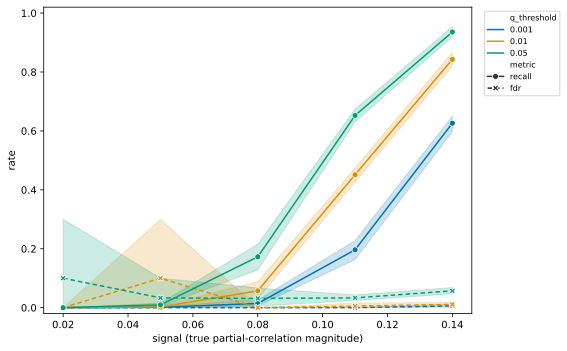
10.1.4 Simulating data based on existing data
It’s very common for researchers to collect a dataset of interest and then develop code that implements their analysis on that dataset to ask their questions of interest. However, this approach raises a concern that the choices made in the course of analysis might be biased by the specific features of the dataset (Gelman & Loken 2014). In particular, decisions might be made that reflect the noise in the dataset, rather than the true signal, which is often referred to as overfitting (discussed further below). In some fields (particularly in physics) it is common to perform blind analysis (MacCoun & Perlmutter 2015), in which analysts are given data that are either modified or relabeled, in order to prevent them from being biased by their hypotheses. One way to achieve this in the context of data analysis is to develop the code using a simulated dataset that has some of the same features as the real dataset, such that one can implement the code, validate it, and then immediately apply it to the real data once they are made available. To achieve this, one needs to be able to generate simulated data based on an existing dataset; for blind analysis, the generation of the simulated data should be performed by a different member of the research team. For example, in some cases I have generated the simulated data for a study based on the real data and provided those to my students, only providing them with the real data once the code was implemented and validated.
The important question in generating simulated data from real data is what specific features one intends to capture from the real data. This generally will require some degree of domain expertise in order to understand the features of the data. Some common features that one might wish to replicate are:
Data types (e.g. categorical, integer, floating point)
Marginal distributions of the values (minimally the summary statistics, preferably the shape)
Joint distributions of the variables (e.g. capturing correlations between variables)
It’s generally important to avoid including features in the model that are directly relevant to the hypothesis. For example, if the hypothesis relates to correlations between specific variables in the dataset, then the correlation in the simulated data should not be based on the correlation in the real data, lest the analysis be biased.
Here I will focus primarily on tabular data; while there are simulators to generate more complex types of data, such as genome wide association data (Purcell et al. 2007) and functional magnetic resonance imaging data (Ellis et al. 2020), these require substantial domain expertise to use properly, whereas tabular data are widely applicable. For simple datasets it may be most appropriate to generate simulated data by hand; here I will use the Synthetic Data Vault (SDV) Python package (sdv.dev), which has powerful tools for generating many kinds of synthetic data.
As an example, I will use the Eisenberg data that you have already seen on a couple of occasions. I’ll start by picking out a few variables and then using SDV to create a synthetic dataset whose distributions for each variable match those in the original, but the columns are generated independently, which removes any correlations between columns. After loading and combining the demographic and behavioral data frames, selecting a few important variables, and joining them into a single frame (df_orig), I then use SDV to generate simulated data for each variable, shuffling each column after generation to destroy any correlations:
from sdv.single_table import GaussianCopulaSynthesizer
from sdv.metadata import Metadata
def generate_independent_synthetic_data(df: pd.DataFrame, random_seed: int = 42) -> pd.DataFrame:
"""
Generate synthetic data where all variables are independent.
Uses SDV to model the full dataset, then shuffles each column
independently to break all correlations while preserving marginal distributions.
Args:
df: Original dataframe to generate synthetic version of.
random_seed: Random seed for reproducibility (default: 42).
Returns:
Synthetic dataframe with same shape and column names as input,
but with independent variables.
"""
# Suppress the metadata saving warning
warnings.filterwarnings('ignore', message='We strongly recommend saving the metadata')
# Set random seed
if random_seed is not None:
np.random.seed(random_seed)
# Create metadata for the full dataset
metadata = Metadata.detect_from_dataframe(
data=df,
table_name='full_data'
)
# Create synthesizer for the full dataset
synthesizer = GaussianCopulaSynthesizer(
metadata,
enforce_rounding=False,
enforce_min_max_values=True,
default_distribution='norm'
)
# Fit synthesizer to the full dataset
synthesizer.fit(df)
# Generate synthetic data
df_synthetic = synthesizer.sample(num_rows=len(df))
# CRITICAL: Shuffle each column independently to break all correlations
# This preserves the marginal distribution of each variable but eliminates dependencies
for col in df_synthetic.columns:
shuffled_values = df_synthetic[col].values.copy()
np.random.shuffle(shuffled_values)
df_synthetic[col] = shuffled_values
return df_syntheticWe can then visualize the correlations and distributions for the original data and the synthetic data; in Figure 1.4 we see that the distributions in the synthetic data are very similar to those in the original data, while in Figure 1.5 we see that the synthetic data do not include the original correlations.
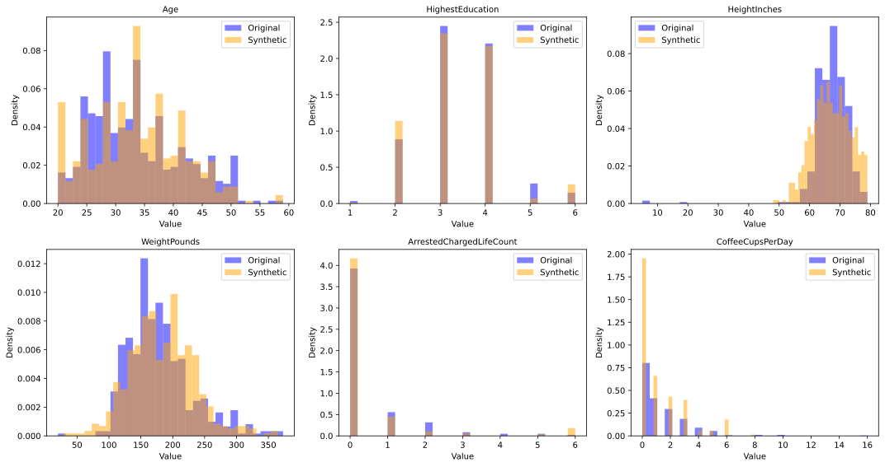
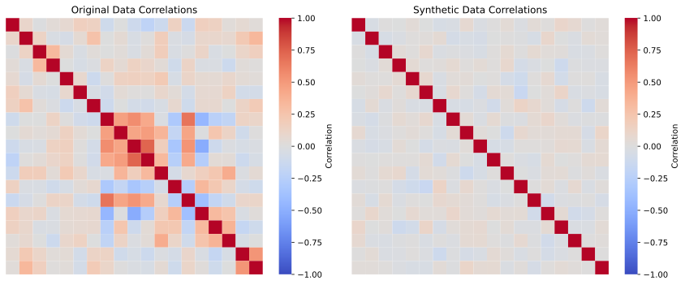
The SDV package also offers many additional tools for more sophisticated generation of synthetic data. We will see below additional ways to use synthetic data for validation of scientific data analysis code.
10.2 Estimating model parameters
It is very common in science to collect data and then use those data to estimate the parameters for a given model, and it’s important to ensure that the estimates are valid. Given the central role of parameter estimation in code testing and validation, I now dive into the various methods that one can use to estimate model parameters, and show examples of how we might validate them. In addition to estimating model parameters, we generally also want some kind of way to quantify the uncertainty in our estimates. That is, rather than thinking of the parameter estimate as a single point value, we can ask: What range of values for the parameter are consistent with the data? This is often expressed using confidence intervals, though I will discuss below the ways that these are often misunderstood.
A central idea in this section will be the notion of parameter recovery: that is, how well can our estimation procedure recover the true parameter values using simulated data? This is particularly important in cases where we don’t have statistical guarantees on the unbiasedness of our estimates. As we will see, simulation provides a powerful tool to assess parameter recovery performance for any model. We will look at three different ways that one can estimate model parameters from data, whose applicability depends on the nature of the model being used.
10.2.1 Closed-form estimates
In some cases parameter estimates can be obtained using a closed form analytic solution. We will use the normal distribution as an example. This distribution has two parameters: a mean (which is a location parameter) that specifies where the center of the distribution falls, and a standard deviation (which is a scale parameter) that specifies the width of the distribution. The probability function for the normal distribution is:
\[\begin{equation} p(x \mid \mu, \sigma) = \frac{1}{\sigma \sqrt{2\pi}} \exp\left(-\frac{(x - \mu)^2}{2\sigma^2} \right) \end{equation}\]
where \(\mu\) is the mean and \(\sigma\) is the standard deviation.
Our goal in estimating model parameters is to find estimates (in this case for the mean and standard deviation) that maximize some measure of goodness of fit with respect to the data, or equivalently, minimize some measure of error. Since we don’t want positive and negative errors to cancel each other out, we need a measure of error that is uniquely positive regardless of the direction of the error. The most common measure in statistics is the mean squared error:
\[\begin{equation} \text{MSE} = \frac{1}{n} \sum_{i=1}^{n} (y_i - \hat{y}_i)^2 \end{equation}\]
where \(y_i\) is the value for the i-th observation, \(\hat{y}_i\) is the estimated value for that observation from the model, and \(n\) is the sample size. In the case of the normal distribution, \(\hat{y}_i\) is the same for each observation: the mean. We can estimate the mean for the sample using the closed form solution:
\[\begin{equation} \bar{y} = \frac{1}{n} \sum_{i=1}^{n} y_i \end{equation}\]
where \(\bar{y}\) is the mean. We can then compute the standard deviation using this estimated mean:
\[\begin{equation} s_y = \sqrt{\frac{1}{n-1} \sum_{i=1}^{n} (y_i - \bar{y})^2} \end{equation}\]
Note that this is very similar to the mean squared error, differing in the presence of a square root as well as the use of \(n - 1\) rather than \(n\) in the demominator. The latter is meant to adjust for the fact that we lost one degree of freedom when we estimated the mean from the same data and then used it to compute the standard deviation. When the variance (the square of the standard deviation) is computed using this correction it will be unbiased, meaning that its expected value will match the true variance of the population. The standard deviation is still slightly biased, but less so than the one computed without the correction.
Figure 1.6 shows an example of a histogram based on samples from a normal distribution, with the theoretical normal distribution based on the estimated sample mean and standard deviation overlaid. Visually it’s clear that the fitted distribution characterizes the overall shape well, even if it mismatches the shape at finer grain, due to sampling variability.
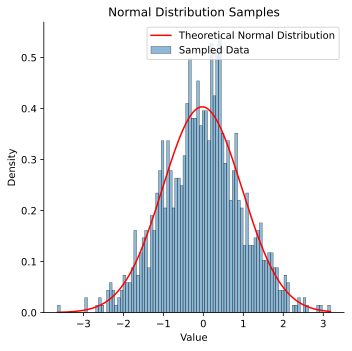
10.2.1.1 Quantifying uncertainty in closed-form estimation
In general we want not just a point estimate for our parameter but also an estimate of our uncertainty in that estimate. The confidence interval is the most commonly used method for expressing uncertainty around an estimate, and with closed form expressions it’s often possible to compute the confidence interval directly. A confidence interval is expressed in terms of a percentage, but the meaning of this percentage is often misinterpreted (see the discussion in my Statistical Thinking for more on this). The term “95% confidence interval” seems to imply that it is an interval in which we have 95% confidence that the true value of the parameter falls. However, that violates the frequentist statistical logic that underlies the computation of the confidence interval, which treats the true value as fixed, and thus it either falls in the interval or it doesn’t. Instead, the more appropriate interpretation of a frequentist confidence interval is that it is the interval that would capture the true population mean 95% of the time for samples from the same population. I prefer to frame it in a slightly different, if somewhat less precise way: The confidence interval expresses the range of plausible values for the parameter given our data, and thus tells us something about the precision of our estimate: All else being equal, a sample estimate with a narrower confidence interval is more precise than an estimate with a wider confidence interval.
Using our example from above, we can compute a confidence interval for our estimate of the sample mean. This requires that we have a probability distribution that is associated with our statistic; in this case, the Student’s t distribution is appropriate since we have estimated the standard deviation as well as the mean. The t distribution has slightly wider tails than the normal distribution, which helps account for the added uncertainty in our estimate of the standard deviation. The equation for the confidence interval around the mean using the t distribution is:
\[\begin{equation} \bar{y} \pm t_{\alpha/2, \, n-1} \cdot \frac{s_y}{\sqrt{n}} \end{equation}\]
where \(s_y\) is the sample standard deviation, \(n\) is the sample size, and \(t_{\alpha/2, \, n-1}\) is the critical value of the t distribution with \(n - 1\) degrees of freedom at the \(\alpha/2\) percentile. \(\alpha\) defines our confidence level, and it is divided by two since we are interested in both the positive and negative directions. In our case, this results in a confidence interval of [-0.09028, 0.03249]. We can use a simulation to confirm that this interval indeed captures the sample mean 95% of the time for new samples from the same distribution:
n_simulations = 100000
confidence_level = 0.95
alpha = 1 - confidence_level
random_state = 42
true_mean, true_sd = 0, 1
sample_size = 1000
# Track how many times the CI captures the true mean
captures = 0
# Run simulations
for i in range(n_simulations):
# Draw a new sample from the population
sample = norm.rvs(loc=true_mean, scale=true_sd,
size=sample_size, random_state=random_state)
# Calculate sample statistics
sample_mean_sim = np.mean(sample)
sample_sd_sim = np.std(sample, ddof=1)
# Calculate confidence interval
df = sample_size - 1
t_crit = t.ppf(1 - alpha/2, df)
se = sample_sd_sim / np.sqrt(sample_size)
margin = t_crit * se
ci_low = sample_mean_sim - margin
ci_high = sample_mean_sim + margin
# Check if CI captures the true mean
if ci_low <= true_mean <= ci_high:
captures += 1
# Calculate coverage rate
coverage_rate = captures / n_simulations
print(f"Simulation results:")
print(f"Number of simulations: {n_simulations}")
print(f"Sample size per simulation: {sample_size}")
print(f"True population mean: {true_mean}")
print(f"Confidence level: {confidence_level * 100}%")
print(f"\nCoverage rate: {coverage_rate:.4f} ({coverage_rate * 100:.2f}%)")Simulation results:
Number of simulations: 100000
Sample size per simulation: 1000
True population mean: 0
Confidence level: 95.0%
Coverage rate: 0.9503 (95.03%)Here we see that the observed proportion of samples where the sample mean falls within the confidence interval is very close to the 95% that we expect based on statistical theory.
10.2.1.2 The bootstrap as a general method for quantifying uncertainty
There are often cases where we don’t have a sampling distribution that we can use to form a confidence interval. In these cases, we can use a technique known as the bootstrap. This method takes advantage of resampling, meaning that we repeatedly draw samples with replacement from our full sample. We can do this using the scipy.stats.bootstrap() function, which performs the bootstrap on a sample given any statistical function:
from scipy.stats import bootstrap
# use the bias-corrected/accelerated method ('BCa')
res = bootstrap((normal_samples,), np.mean, confidence_level=0.95,
n_resamples=10000, method='BCa', random_state=random_state)
print(f'Bootstrap 95% CI for mean: '
f'[{res.confidence_interval.low:.5f}, '
f'{res.confidence_interval.high:.5f}]')
print(f'CI based on t-distribution: [{ci_lower:.5f}, {ci_upper:.5f}]')Bootstrap 95% CI for mean: [-0.09104, 0.03078]
CI based on t-distribution: [-0.09028, 0.03249]Here we see that the bootstrap procedure gives results that are very close to those obtained using the closed form solution, but has the advantage of being usable with nearly any statistic (except for those based on extreme values) regardless of whether or not there is a closed form estimator and/or the sampling distribution is analytically tractable.
Despite the challenges in interpreting frequentist confidence intervals, they remain an essential tool in practice for quantifying the uncertainty of statistical estimates.
10.2.2 Bayesian estimation
We would like a way of generating an interval that expresses our confidence about the true parameter value, but we can’t do this in the frequentist framework. However, there is a different approach to statistics that allows us to generate such an interval, known as Bayesian statistics after the Reverend Thomas Bayes whose famous equation forms the basis of this approach. Bayesian statistics is based on a different conception of probability from the frequentist approach that underlies the standard confidence interval. Under the frequentist conception, probabilities are meant to refer to the long-run frequencies of outcomes across many samples, while the true parameter value is viewed as fixed. For this reason, it doesn’t make sense to a frequentist to say that there is a particular probability of the true parameter value; it simply is what it is. Bayesians, on the other hand, view probabilities as degrees of belief, and treat the estimation of parameters from data as a way to sharpen our belief - that is, as a learning opportunity. This means that it is perfectly legitimate in the Bayesian framework to say that there is a 95% probability that the true value of a parameter lies within a particular interval.
The fundamental idea in Bayesian statistics is that we start with a set of beliefs (known as a prior distribution), we obtain some relevant data, and then use the likelihood of those data given the possible parameter values to update our beliefs, generating a posterior distribution. I won’t go into detail about Bayesian methods here; see my Statistical Thinking for a basic overview, and (Gelman 2013) or (McElreath 2020) for more detailed overviews. Instead I will show an example of Bayesian estimation applied to our example data above. There are several Python packages that can be used to perform Bayesian estimation; I will use the popular PyMC package. The first section sets up the Bayesian model, with priors for the mean (mu) and standard deviation (sigma) that are very broad and thus will have little influence on the outcome; in Bayesian terms these are referred to as weakly informative priors. We then perform sampling to obtain an estimate of the posterior distribution of the parameters given the data. Using these distributions, we can then find the narrowest set of values that contain 95% of the mass of posterior distribution, which are known as the highest density interval (HDI) (which is a type of credible interval that contains the most likely values). This interval serves as a Bayesian alternative to the frequentist confidence interval, allowing us to legitimately describe it as the interval that has a 95% probability of containing the true value.
import pymc as pm
import arviz as az
# Bayesian estimation using PyMC
with pm.Model() as model:
# Priors for unknown model parameters
mu = pm.Normal('mu', mu=0, sigma=1000) # Prior for mean
sigma = pm.HalfNormal('sigma', sigma=100) # Prior for standard deviation (must be positive)
# Likelihood (sampling distribution) of observations
likelihood = pm.Normal('likelihood', mu=mu, sigma=sigma, observed=normal_samples)
# Posterior sampling
trace = pm.sample(10000, tune=1000, return_inferencedata=True, random_seed=42)
# Extract posterior estimates
posterior_mean = trace.posterior['mu'].mean().values
posterior_sd = trace.posterior['sigma'].mean().values
# extract highest density interval
hdi = az.hdi(trace, hdi_prob=0.95)
hdi_values = hdi.mu.values
print(f"Posterior mean: {posterior_mean:.5f}, Posterior sd: {posterior_sd:.5f}")
print(f"Sample mean: {sample_mean:.5f}, Sample sd: {sample_sd:.5f}")
print(f'95% HDI values: {hdi_values}')
print(f'95% CI based on t-distribution: [{ci_lower:.5f}, {ci_upper:.5f}]')Posterior mean: -0.02895, Posterior sd: 0.99033
Sample mean: -0.02889, Sample sd: 0.98922
95% HDI values: [-0.08993, 0.03335]
95% CI based on t-distribution: [-0.09028, 0.03249]In this case, the Bayesian HDI turns out to be very close to the parametric confidence interval. We can also obtain a visualization of the full posterior distributions obtained through Bayesian estimation, which are shown in Figure 1.7:
# Visualize posterior distributions
fig, axes = plt.subplots(1, 2, figsize=(12, 4))
# Plot posterior for mu
az.plot_posterior(trace, var_names=['mu'], ax=axes[0])
axes[0].axvline(sample_mean, color='red', linestyle='--', label='Sample mean')
axes[0].legend()
# Plot posterior for sigma
az.plot_posterior(trace, var_names=['sigma'], ax=axes[1])
axes[1].axvline(sample_sd, color='red', linestyle='--', label='Population sd')
axes[1].legend()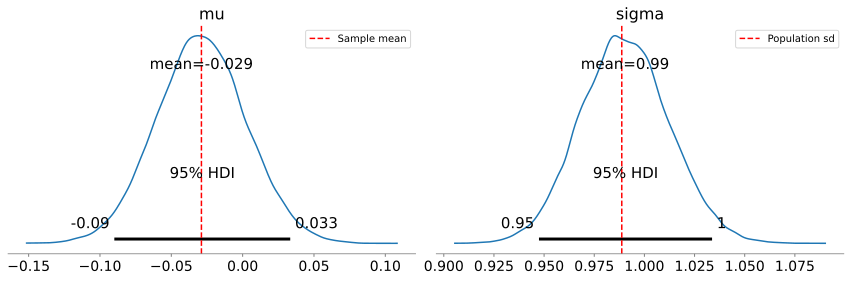
Bayesian estimation can be particularly useful when one has a strong prior belief about the value of a parameter and wishes to update that belief based on data. For example, let’s say that there was a published dataset that reported a particular parameter value, and a researcher performs additional observations and wants to update that parameter estimate. Bayesian estimation allows this via the specification of the prior probability distribution. In the example above we used a relatively non-informative prior for the mean (a normal distribution with mean of zero and standard deviation of 1000, which allows for a very wide set of possibilities). However, if we have existing data then we can use those data to inform our subsequent analyses, consistent with the idea that Bayesian inference is a form of learning from data. One can also provide a prior based on one’s scientific hypotheses or expectations, and the ability to incorporate prior knowledge into parameter estimation is generally taken as a strength of Bayesian methods; however, one must be sure that the prior doesn’t overwhelm the data dogmatically, effectively forcing a particular answer regardless of what the data say.
One drawback of Bayesian methods is that they can be very computationally expensive. For example, the Bayesian estimation above took a bit over 2 seconds using 4 parallel sampling processes, which is much slower than the 189 microseconds required for closed-form estimation and also substantially slower than the optimization methods discussed in the next section. There are alternative Bayesian methods known as variational Bayes that use mathematical tricks to speed up estimation, but often require substantial mathematical skill to develop, though some packages like PyMC now offer built-in variational Bayes methods. However, these timing issues only become practically important when working with massive data sets or large numbers of models.
10.2.3 Estimating parameters using optimization
In many cases we don’t have a closed form solution that we can use to compute the parameter estimates directly. In this case it’s common to use some form of optimization (or search) process to find the parameters that best fit the data. The simplest way to do this is to try a large range of parameter values and choose the one that best fits the sample, which is known as a grid search. This is generally done with the goal of maximizing the likelihood of the data given the model parameters, and hence is called maximum likelihood estimation. In other words, we aim to find the values of the parameters that make the observed data most likely. In practice we would generally use the log of the likelihood rather than the likelihood itself, since these values are often very small which can result in floating point errors.
In the case of the normal distribution the maximum likelihood estimate is equivalent to the estimate that minimizes the squared error, since the sample variance (which is based on the squared error) is part of the likelihood equation. But we can also use this example to see how grid search might work with our sample. I ran a grid search using a grid of 1000 possible mean values linearly spaced across [-1, 1], and 1000 possible standard deviation values spaced across [0.5, 1.5]; these particular values were based on my knowledge that the data came from a normal distribution and that these ranges should be likely to capture the parameter values in a dataset of this size. The results came out very close to those obtained using the closed-form solution; note that the maximum likelihood estimate for the standard deviation is equivalent to the population rather than sample standard deviation (i.e. it uses \(N\) rather than \(N - 1\) in its denominator), so I corrected the sample standard deviation to make the comparison fair:
Best fit mean: 0.0190, Best fit sd: 0.9785, loglik: -1397.4353
Sample mean: 0.0193, Population sd: 0.9787, loglik: -1397.4352We can see this visualized in Figure 1.8, where we see the landscape of the likelihood across a range of possible parameter values; here we use the negative log-likelihood for visualization, since optimization methods tend to use the language of minimization rather than maximization. We can see that this landscape is smooth and only has one visible minimum; this occurs because the negative log-likelihood surface for the normal distribution is convex, which guarantees that there is a single minimum and thus that regardless of where we start our search, we are guaranteed to find the global minimum by simply following the surface downward, a process central to many optimization algorithms (including the commonly used gradient descent). As we will see below, most realistic optimization problems have multiple local minima, making them much more difficult to optimize by simply following the surface downward.

While grid search worked, it was exceedingly slow, taking more than 25 seconds to estimate the parameters that were estimated by closed form in less than a millisecond - a staggering 89,000 times slower! Grid search is inefficient even with just two parameters, and becomes exponentially less efficient with each additional parameter. However, grid search over a coarse grid can be very useful for exploring the loss landscape of an optimization problem and identifying the presence of multiple local optima.
A more effective and efficient way to estimate parameters is using optimization methods that are specifically built to search for parameter values that minimize a particular loss function. A common choice in Python is scipy.optimize.minimize(), which offers a number of algorithms for parameter search. We can implement this for our normal distribution data; because the function finds the minimum, we will use the negative log-likelihood as our target, which is equivalent to maximizing the log-likelihood:
import time
from scipy.stats import norm
def negative_log_likelihood(params: np.ndarray, data: np.ndarray) -> float:
"""Negative log likelihood function to minimize"""
mu, sd = params
# ensure sd is positive to avoid dividing by zero
if sd <= 0:
return np.inf
return -norm.logpdf(data, loc=mu, scale=sd).sum()
# initial guess
initial_params = [0, 1]
start_time = time.time()
result = minimize(negative_log_likelihood, initial_params, args=(normal_samples,),
method='Nelder-Mead')This gives us a solution that is equal to the fourth decimal place:
Optimized mean: 0.01926, Optimized sd: 0.97873, loglik: -1397.43520
Sample mean: 0.01933, Population sd: 0.97873, loglik: -1397.43519These estimates were obtained about 8,000 times more quickly compared to grid search, though still about 10 times slower than the closed-form solution. Note that I had to add some initial guesses for our parameter values, and for this example I used values that were close to the known true values. However, even when the starting values are far from the true values, optimization can often find them quickly and effectively, particularly when the likelihood landscape is convex. For example, setting the starting points for both mean and standard deviation to 10,000, the resulting parameter estimates were basically identical, and it still completed more than 2,700 times faster than the grid search.
It’s common to put boundaries on an optimization when there are bounds outside which we are sure that the parameter shouldn’t go. For example, in our example we know that the standard deviation cannot be negative, so we could set the lower bound on the standard deviation parameter to just above zero:
from scipy.optimize import minimize, Bounds
bounds = Bounds(lb=[-np.inf, 1e-6], ub=[np.inf, np.inf])
result = minimize(negative_log_likelihood, initial_params, args=(normal_samples,),
method='L-BFGS-B', bounds=bounds)This doesn’t have much impact on this particular problem, but with complex models and multiple parameters it’s common for parameter values to explode, and setting boundaries can help prevent that. However, as I will discuss below, it’s important to ensure that parameter estimates don’t sit at the boundaries, as this can suggest pathologies in model fitting that call into question the validity of the parameter estimates.
10.2.4 Automated differentiation
The optimization methods discussed above are limited either to small numbers of parameters (like derivative-free methods such as Nelder-Mead) or small numbers of data points (like gradient-based methods such as L-BFGS that require computation of gradients across the entire dataset on each optimization step). Given this, how is it possible to train artificial neural networks that may have billions of parameters over trillions of data points? A key innovation that has enabled effective training of large models is automatic differentiation (often called autodiff for short) combined with gradient descent. Automatic differentiation takes a function definition and (when possible) automatically determines the derivatives of the loss function with respect to the parameters. Gradient descent uses those derivatives to follow the loss landscape downwards. In deep learning it’s most common to use stochastic gradient descent (SGD), which uses small mini-batches of data to iteratively estimate the gradients; even though the estimates for each individual batch are noisy, they are unbiased estimates of the true gradient and computationally cheap to obtain, such that the noise averages out over many iterations to give precise parameter estimates at comparatively low computational cost. However, given the small dataset in this sample I will use the simpler standard gradient descent over the entire dataset at once.
As an example, we can estimate parameters for the Michaelis-Menten equation from biochemistry, which describes the rate at which an enzyme converts its substrate into its product:
\[\begin{equation} V = \frac{V_{max} \cdot [S]}{K_m + [S]} \end{equation}\]
where \(V\) is the reaction velocity, \(S\) is the concentration of the enzyme’s substrate, \(V_{max}\) is the maximum reaction velocity once the enzyme is saturated with substrate, and \(K_m\) is the Michaelis constant that describes the affinity of the particular enzyme for its substrate (defined as the value of \(S\) at which \(V = V_{max}/2\)). Figure 1.9 shows a plot of this function for the acetylcholinesterase enzyme, along with noisy data generated from the function.
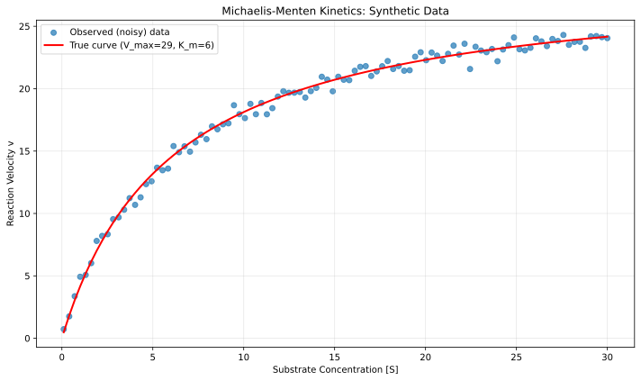
This equation could easily be solved using simpler methods, but it’s a nice simple example to show how model parameters can be estimated using autodiff with gradient descent. We can start by defining the Michaelis-Menten function and generating some data with random noise (shown in Figure 1.9; plotting code omitted):
def michaelis_menten(S, V_max, K_m):
return (V_max * S) / (K_m + S)
V_max_true = 29 # Maximum velocity (in nM/min)
K_m_true = 6 # Michaelis constant (in mM)
noise_sd = 0.5 # Standard deviation of noise
# Generate substrate concentration data points
S = np.linspace(0.1, 30, 100)
v_true = michaelis_menten(S, V_max_true, K_m_true)
noise = np.random.normal(0, noise_sd, size=v_true.shape)
v_observed = v_true + noiseIn order to invoke the automatic differentiation mechanism in PyTorch, we simply need to specify requires_grad=True for the variables that we intend to estimate:
# Convert data to PyTorch tensors
S_tensor = torch.tensor(S, dtype=torch.float32)
v_observed_tensor = torch.tensor(v_observed, dtype=torch.float32)
# specify initial guesses
V_max_init = 10.0
K_m_init = 10.0
# Initialize parameters with random guesses
# requires_grad=True enables automatic differentiation
V_max = torch.tensor(V_max_init, requires_grad=True)
K_m = torch.tensor(K_m_init, requires_grad=True)We also need to set up a loss function that will define how far the prediction is from the data, for which we will use the squared error:
def compute_loss(V_max: torch.Tensor, K_m: torch.Tensor, S: torch.Tensor, v_observed: torch.Tensor) -> torch.Tensor:
"""Compute MSE loss between predicted and observed velocities."""
v_predicted = michaelis_menten(S, V_max, K_m)
loss = torch.mean((v_predicted - v_observed) ** 2)
return lossUsing this we set up our training loop that uses gradient descent to estimate the parameters (with some code omitted for clarity), and assess the parameter recovery of the model by comparing the estimates to the true values:
learning_rate = 0.1
n_iterations = 500
# Test the loss with initial parameters
initial_loss = compute_loss(V_max, K_m, S_tensor, v_observed_tensor)
print(f"Initial loss: {initial_loss.item():.4f}")
# Gradient descent training Loop
for i in range(n_iterations):
# Forward pass: compute loss
loss = compute_loss(V_max, K_m, S_tensor, v_observed_tensor)
# Backward pass: compute gradients via autodiff
loss.backward()
# Update parameters using gradient descent step
# torch.no_grad() prevents these operations from being tracked
with torch.no_grad():
V_max -= learning_rate * V_max.grad
K_m -= learning_rate * K_m.grad
# Zero the gradients for the next iteration
V_max.grad.zero_()
K_m.grad.zero_()
print(f"\nFinal estimates: V_max = {V_max.item():.4f}, K_m = {K_m.item():.4f}")
print(f"True values: V_max = {V_max_true:.4f}, K_m = {K_m_true:.4f}")Initial loss: 188.0915
Final loss: 0.2006
Final estimates: V_max = 29.0894, K_m = 6.1336
True values: V_max = 29.0000, K_m = 6.0000Since there are only two parameters, we can easily visualize how the parameter estimate traverses the loss landscape as the estimation process moves from the initial guesses (in this case 10 for both parameters) to the final values, as shown in Figure 1.10.
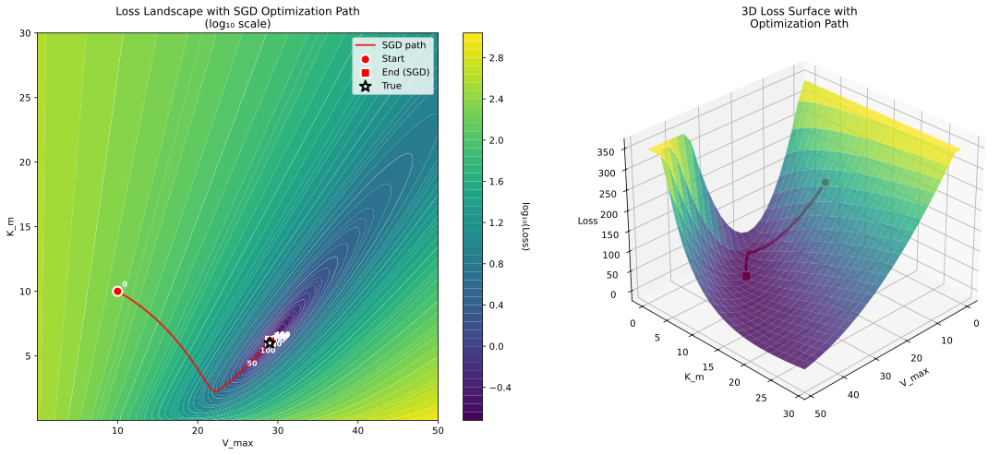
10.2.4.1 Local minima in optimization
The error landscape for the normal distribution example is convex, which means that there is a single global minimum that can be found simply by following the error gradient downwards. The error landscape of the Michaelis-Menten problem is non-convex, though it is smooth and relatively well behaved, as seen in Figure 1.10. However, many realistic scientific problems have highly complex non-convex likelihoods, such that there are numerous local minima that the optimization routine can get stuck in. Figure 1.11 shows an example of this.
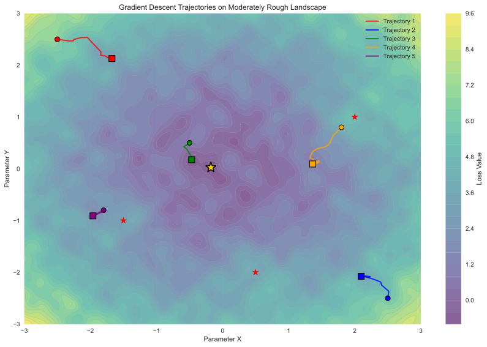
There are a number of strategies that one can employ to help avoid parameter estimates that are far from the optimal answer that is located at global loss minimum:
Run the estimation algorithm multiple times with different random initializations of the parameters. If they are similar between runs then this gives confidence that the estimates don’t reflect local minima. If the parameter estimates differ yet losses are similar, this suggests that the parameters may be trading off against one another, which reflects a structural problem with the model or data such that there are many equally good points in the loss landscape. This is often referred to as non-identifiability of the parameters, and is sometimes evident in correlations between the different parameter estimates.
Use an optimizer that adapts the learning rate to the local gradient, such as ADAM or RMSprop.
Use an optimizer that explores more broadly before converging, such as the differential evolution method implemented in
scipy.optimize.differential_evolution.It can sometimes be helpful to reparameterize the model to help with convergence. For example, if the models are physically constrained to being positive, then one might consider optimizing the logarithm of the parameter rather than the natural values of the parameters; this allows the optimizer to explore the entire range of large and small numbers while respecting the positivity constraint. If the different parameters are on very different scales this can also cause problems since the optimizer needs to move at different rates in different directions of the loss space, so reparameterizing the model such that parameters are in roughly the same numeric scale can be useful.
10.2.5 Simulation based inference
Sometimes we want to estimate parameters from a model that doesn’t have a tractable analytic likelihood function (which rules out standard maximum likelihood estimation) and is not differentiable (which rules out gradient-based methods). However, it’s often true in cases like this that it’s relatively easy to simulate data from the model, even if the likelihood can’t be computed. This has led to the idea of simulation-based inference (Cranmer et al. 2020), in which one generates synthetic data using a simulation in order to learn how the simulated data relate to the parameters of the model, and then uses that learned mapping to estimate the most likely parameter values (or their full posterior distribution) given the observed data. In many cases it’s not possible to directly compare simulated and observed data (for example, when working with timeseries data that have uncertain phase), so instead one uses some form of summary or embedding of the data that characterizes relevant aspects of its structure in a way that is informative of the model parameters.
As an example, let’s take the stochastic form of Ricker’s [1954] model of population dynamics, which is a state space model that describes how a population size changes over time:
\(N_{t+1} = r * N_t * e^{-N_t + \epsilon_t}\)
where \(N_t\) refers to the (unobservable) true population size at time \(t\), \(r\) refers to the growth rate of the population and \(\epsilon_t \sim Normal(0, \sigma)\) describes noisy fluctuations in the population size. Observations of population size are described in terms of a measurement model that is a Poisson-distributed function of the population size:
\(Y_t \sim Poisson(\phi N_t)\)
where \(\phi\) is a scale factor. This is a model that is often used to understand how a population will respond to interventions, such as determining how much fishing a fish population can withstand.
The Ricker model does not have a tractable analytic likelihood; more importantly, it also has chaotic dynamics at higher \(r\) values, such that tiny changes in initial values can have huge impacts on the resulting data. This means that the loss landscape is very jagged and difficult to optimize over. The idea of synthetic likelihood was first developed to analyze these kinds of data, in which one estimates the parameters using summary statistics of the data to estimate parameters rather than the data themselves. If one chooses the appropriate summary statistics then it’s possible to effectively model the data in this way, but this requires a deep understanding of the dynamics of the data; for example, Wood’s (Wood 2010) synthetic likelihood implementation of the Ricker model involved the following summary statistics:
the autocovariances to lag 5; the coefficients of the cubic regression of the ordered differences \(y_t - y_{t-1}\) on their observed values; the coefficients, \(\beta_1\) and \(\beta_2\), of the autoregression \(y_{t+1}^{0.3} \sim \beta_1 y_t^{0.3} + \beta_2 y_t^{0.6}\) where \(\epsilon_t\) is ‘error’); the mean population; and the number of zeroes observed.
More recently the manual identification of a set of summary statistics has been supplanted by the use of neural network models to generate low-dimensional embeddings of the data. Here I will use a method called Neural Posterior Estimation (Greenberg et al. 2019) in which a neural network model is trained to infer the posterior distribution of parameters from simulated data. We also use a separate neural network model to generate a low-dimensional embedding of the observed data, which maintains information about temporal structure of the data and allows comparison of predicted and observed data in a common space.
I will use the sbi Python package that implements several methods for simulation-based inference, leveraging the Pytorch package for acceleration of neural network modeling using graphical processing units (GPUs), to be discussed in more detail in Chapter 10. We first define our simulator, which for the Ricker model is very simple:
def ricker_model(N: float, r: float, sigma: float = 0.3, phi: float = 10) -> tuple[float, int]:
N_next = r * N * np.exp(-N + np.random.normal(0, sigma))
y_next = np.random.poisson(N_next * phi)
return N_next, y_next
def ricker_simulator(params: torch.Tensor, t: torch.Tensor | None = None, n_time_steps: int = 250, starting_n: int = 100) -> torch.Tensor:
r = params[0].cpu().numpy() # intrinsic growth rate
sigma = params[1].cpu().numpy() # growth rate variability
phi = params[2].cpu().numpy() # measurement error term
if t is None:
t = torch.linspace(0, 1, n_time_steps)
N = starting_n
timeseries = []
for t in range(n_time_steps):
N, y = ricker_model(N, r, sigma, phi)
timeseries.append(y)
# return only y values
return torch.as_tensor(np.array(timeseries), dtype=torch.float32)In this case the model generates the next latent population size as well as the next observation based our Poisson-distributed measurement model (here using the global random number generator for simplicity), and the simulator function runs this model over a number of time steps. We next specify the prior distributions for our parameters of interest (using uniform priors over a large range of possible values), and generate a large number of datasets using samples from these priors:
from sbi.utils import BoxUniform
import torch
# use the GPU if it's available
device = torch.device("cuda" if torch.cuda.is_available() else "cpu")
# Define prior distributions based on parameter ranges
# r (intrinsic growth rate): [1, 100]
# sigma (growth rate variability): [0.1, 5]
# phi (measurement error term): [1, 50]
prior = BoxUniform(
low=torch.tensor([1, 0.1, 1], device=device),
high=torch.tensor([100, 5, 50], device=device),
device=device
)
# Generate training data
n_simulations = 1000000
thetas = prior.sample((n_simulations,))
xs = torch.stack([ricker_simulator(theta) for theta in thetas]).to(device)Note the references to device in the calls to Pytorch objects; the device variable refers to the computational device that will be used for model fitting, which in this case will use the GPU (referred to as “cuda”, which is the NVIDIA framework for GPU programming) if a CUDA-compatible GPU is available, or the CPU otherwise. As we will discuss in the chapter on performance optimization, when available GPU acceleration can greatly reduce the time needed to fit neural network models.
We then need a way to embed the data that captures the relevant temporal structure in the data. For this we will use a causal convolutional neural network, which embeds our timeseries (which in this example is 250 observations) into a 20-dimensional space that attempts to capture the short-range temporal regularities in the data. This is then used to create a density estimator using a method called masked autoregressive flows (or “maf”):
from sbi.neural_nets import embedding_nets, posterior_nn
# Define a causal CNN embedding for 1D time-series data
embedding_cnn = embedding_nets.CausalCNNEmbedding(
input_shape=(250,), # Time series length
num_conv_layers=4, # Number of convolutional layers
pool_kernel_size=8, # Pooling window for temporal downsampling
output_dim=20, # Embedding dimension
).to(device)
density_estimator = posterior_nn(
model="maf",
embedding_net=embedding_cnn,
z_score_x="none",
z_score_y="none",
)This density estimator is then used to train a neural network to generate posterior estimates based on the simulated observations (from known parameter values) after embedding them:
from sbi.inference import NPE
inference = NPE(prior=prior, density_estimator=density_estimator, device=device)
inference = inference.append_simulations(thetas, xs)
posterior = inference.train(training_batch_size=50, max_num_epochs=100)Once we have the model, then we can sample from it in order to generate a posterior distribution across the parameters for our observed dataset (which is actually a simulated dataset with known parameters):
n_samples = 50000
posterior_conditioned = inference.build_posterior(posterior)
posterior_samples = posterior_conditioned.sample((n_samples,), x=x_obs)Note that since posterior sampling is computationally cheap, we can easily obtain a large number of samples, which helps give cleaner posterior distributions. We can then compare the posterior samples to the true parameter values; as shown in Figure 1.12, the posterior distributions capture each of the true parameter estimates fairly well. One common way to summarize the posterior sample is the maximum a posteriori (MAP) estimate, which is the parameter value with the maximum density. We can also give a 95% credible interval using the posterior distribution, which is the range in which there is 95% probability that the true value falls. In this case these intervals are quite wide, suggesting that our estimates are not particularly precise.
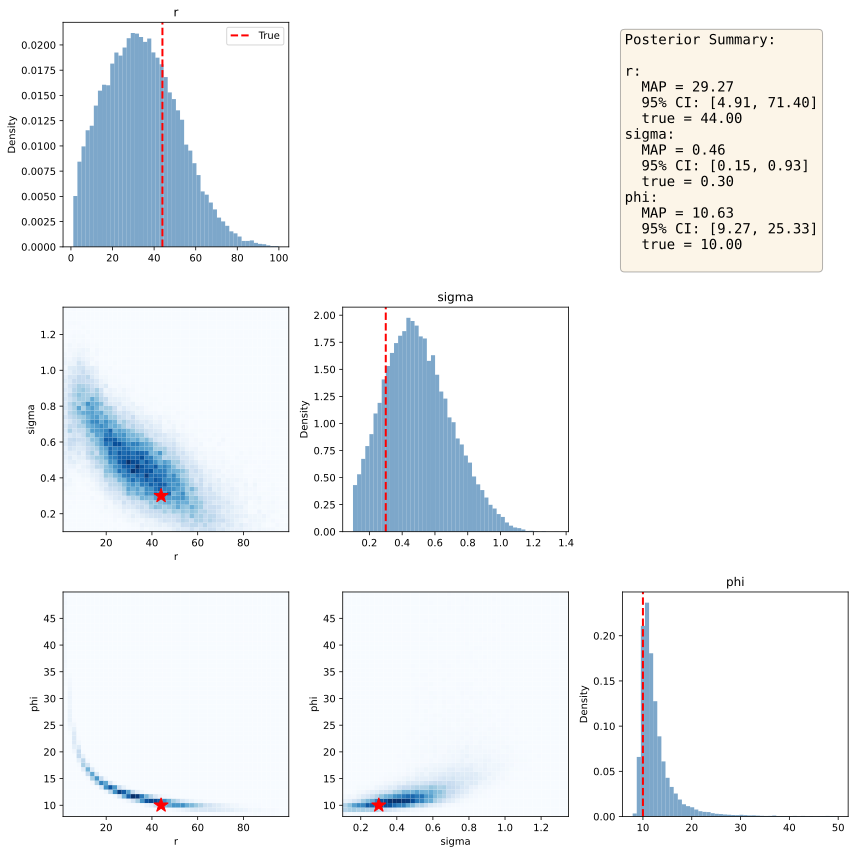
10.2.5.1 Parameter recovery
Simulation allows us to assess how well our estimation procedure performs, by generating data with known model parameters and then comparing the estimated parameters to the true values. Using the code that I had developed for the earlier example, I generated a simulation harness that ran a large number of simulations and recorded the results. I started by training the posterior estimator using one million simulations, in order to ensure that it had good training across the range of possible parameters; Given that this just needs to be trained once, I saved it for later use in my simulations. Then I performed 10,000 experiments in which I generated a dataset from the Ricker model based on known parameters along with added noise, and then used the posterior estimator to estimate the parameters for the dataset.

Figure 1.13 shows the relationship between the true and estimated parameters on the diagonal. We see that the correlations between true and estimated parameters are reasonable but that in some rare cases the estimates can veer far from the true values. There is also faint evidence of some pathologies in model fitting. For both the phi and sigma parameters, there are bands of data points that suggest that the parameter estimation is being pulled towards the prior mean, which can occur if the data are not sufficiently informative. The off-diagonal plots show the relationship between the estimated parameters for each pair of parameters. This is useful to visualize because correlations between estimated parameters can reflect a lack of model identifiability, in which parameters trade off against one another. In this case these relationships are weak, suggesting that the model parameters are indeed identifiable.
10.3 Statistical calibration using randomization
The use of null hypothesis statistical testing is ubiquitous across the sciences, despite having been lambasted for years as “mindless” and “wrongheaded”, as I outlined in my Statistical Thinking. Despite its problems, it remains a central tool for researchers. The most common statistical tests are parametric tests, which means that they are based on distributional assumptions about the statistic in question under the null hypothesis (which usually refers to the lack of an effect). For example, a t-test for differences between two groups would compare the magnitude of the \(t\) statistic to a \(t\) distribution with a mean of zero and with degrees of freedom related to the sample sizes. The resulting p-value tells us how likely the observed data would be if the null hypothesis were actually true. For example, let’s say that we want to look at the correlation between deliberative decision making (i.e. Kahneman’s “Thinking Slow”) measured using the Cognitive Reflection Test, and self-reported household income in the Eisenberg et al. dataset. The correlation between these variables measured using the Spearman rank correlation coefficient is 0.16, and the resulting p-value compared to the null hypothesis of zero is 0.0002, meaning that we would very rarely expect to see a correlation of this size in a sample of this size if there were truly no correlation.
While there is a parametric method to compute a p-value for some tests, in many cases we don’t have a distribution to compare to under the null hypothesis. In this case, a standard approach is known as randomization testing (or sometimes permutation testing), in which we generate new synthetic datasets by randomizing our actual data in a way that causes the null hypothesis to be true. In our correlation example above, we could repeatedly resample one of the variables with random shuffling, thus breaking the link between the two variables; we are in essence forcing the null hypothesis to be true. By doing this repeatedly we can create a null distribution for the statistic of interest, and then compare the observed value to the distribution to determine how likely it would be under the null hypothesis:
from scipy.stats import spearmanr
n_permutations = 10000
observed_corr, _ = spearmanr(data[col1], data[col2])
# include observed corr to ensure that p is not zero
permuted_corrs = [observed_corr]
for _ in range(n_permutations):
shuffled_col2 = data[col2].sample(frac=1, replace=False).values
permuted_corr, _ = spearmanr(data[col1], shuffled_col2)
permuted_corrs.append(permuted_corr)
p_value_randomization = np.mean(np.abs(permuted_corrs) >= np.abs(observed_corr))
print(f"Randomization p-value (two-tailed) = {p_value_randomization:.5f}")Randomization p-value = 0.00040Here we see that the p-value obtained through randomization is very close to the one obtained using the parametric test. The benefit of randomization is that it can be used for any statistic, regardless of whether it has a theoretical null distribution or not. However, note that randomization does generally require the assumption of exchangeability, which can fail when the observations are not independent (such as when there are siblings or other forms of related observations in a dataset).
10.4 Computational control experiments
When we build a computational model or analytic tool, it is essential to ensure that it performs properly. One way to do this is to perform control experiments in which we inject a particular kind of data and make sure that the tool returns the expected results; in a sense this is another form of parameter recovery. There are two types of control experiments that one can run: negative controls and positive controls.
10.4.1 Negative controls
A negative control is a test that should reliably produce negative results. Thinking back to the discussion of virus testing in the earlier chapter on software testing, a negative control would be one where we run a sample know to be virus-free; if the test line appears then the test is invalid. When we build a software tool that is meant to detect a signal, it is essential that we ensure that it will reliably return a negative result when there is no signal.
Negative controls are particularly important whenever one is developing a new method that should have a particular error rate. As an example, I used the RNA-seq dataset from the previous chapter to develop a new biomarker for biological aging. I selected data from a set of 16 older individuals (over 70) and 16 younger individuals (under 40) and then fit a classification model using a stochastic gradient descent classifier. I quantified out-of-sample predictive performance using cross-validation, where different subsets of the data are used to fit the model and the remainder of the data is then used to test the model for that subset. The results showed that I was able to predict whether a person was younger or older with about 67% accuracy; in this case, because the two groups were the same size, we would expect 50% accuracy by chance, and this seems much higher than chance. However, it is always important to ensure that the model performs as expected when there is no signal to be found, and in many cases like this one we can use randomization to break the relationship between variables and ensure that performance should be at chance on average.
You might ask how the performance of the model could possibly not be at chance when the data labels are randomized. Unfortunately, the phenomenon of leakage, in which information from the test data leaks into the training procedure, is exceedingly common, and it can sometimes result in highly inflated predictive results even when there is no true signal (Kapoor & Narayanan 2023). This inflation is particularly powerful when sample sizes are small, like our example with only 16 data points per group.
The most common way in which leakage occurs is when features (i.e. variables) are initially selected based on their relationship to the outcome variable across the entire dataset, rather than being selected using only the training data within each cross-validation fold. We can assess the impact of this by repeatedly resampling the data while randomly shuffling the outcome variables, just ensuring no true predictive ability. Indeed, in this example if we do feature selection appropriately (inside the crossvalidation loop) then the average classification accuracy for randomly shuffled samples is 0.498, which does not significantly differ from the theoretical value of 0.5. However, if we do feature selection prior to cross-validation, then we see average accuracy of 0.614, which is well above the theoretical value. Thus, negative control testing using randomization can help identify cases where results are inflated due to improper analytic procedures.
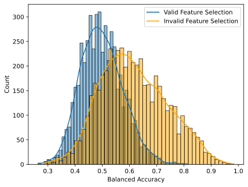
Tip
Always test machine learning workflows using randomized data. If there is still a positive result after randomization, then it’s likely that leakage has occurred.
10.4.2 Positive controls
When developing analytic software, it is also important to determine whether the model can detect relevant signals when they are present, which we refer to as a positive control. To do this, we would generally need to inject some amount of realistic signal into the data, and then assess the model’s ability to detect it. While useful for checking code, positive control simulations are also useful for understanding how various features of the study design (such as the sample size and the intended effect size) relate to the ability to detect signals; in the context of null hypothesis statistical testing this is known as statistical power.
Let’s say that we wanted to build a model to detect a particular disease from gene expression data, and we want to ensure that our model can detect a realistic effect. As an example of this I built a simulation using the RNA-seq data from above. I created a random outcome variable denoting disease presence (with a 10% prevalence), and then multiplied the values of a subset of features by a weighting factor based on disease presence so that expression levels of these genes would be associated with the disease. I initially wrote a function to perform a single simulation, but it was unwieldy so I had my coding agent refactor it into a well-structured class with a separate dataclass for configuration variables. Here is the config dataclass:
@dataclass
class SignalInjectionConfig:
nfeatures_to_select: int = 1000
sim_features: int = 10
n_splits: int = 10
disease_prevalence: float = 0.1
noise_sd: float = 1.0
test_size: float = 0.3
scale_X: bool = True
shuffle_y: bool = FalseThe main class then implements each of the main components of the function as a separate method. Inspecting the code closely, the AI agent had misinterpreted the logic of the original code:
# Shuffle or inject signal
if self.config.shuffle_y:
y = self.rng.permutation(y)
elif beta is not None:
y = self._inject_signal(X, y, beta)In principle the signal injection is independent of whether or not y is shuffled, since the _inject_signal() method generates a new synthetic y variable. However, if one happened to setting shuffle_y=True then the signal injection would be skipped by this code, which is not the intention. This highlights how AI-generated code can contain logical errors that don’t actual cause any apparent runtime errors. To fix this I reordered the statement:
if beta is not None:
y = self._inject_signal(X, y, beta)
elif self.config.shuffle_y:
y = self.rng.permutation(y)Here is the run() method that shows the execution of the main crossvalidation loop, with the different components split into class methods, which makes the code much more readable and understandable:
def run(
self,
X: np.ndarray,
y: np.ndarray,
beta: float | None = None
) -> dict:
"""
Run cross-validated classification with optional signal injection.
Args:
X: Feature matrix.
y: Target labels.
beta: If provided, inject synthetic signal with this coefficient.
Returns:
Mean scores across all CV folds.
"""
# Convert to numpy arrays
X = np.array(X)
y = np.array(y)
# Shuffle or inject signal
if beta is not None:
y = self._inject_signal(X, y, beta)
elif self.config.shuffle_y:
y = self.rng.permutation(y)
# Collect results across folds
fold_results = {
'test_scores': [],
'train_scores': [],
'nfeatures': []
}
for train_idx, test_idx in self.cv.split(X, y):
X_train, X_test = X[train_idx], X[test_idx]
y_train, y_test = y[train_idx], y[test_idx]
# Scale features
if self.config.scale_X:
X_train, X_test = self._scale_features(X_train, X_test)
# Select features
if self.config.nfeatures_to_select is not None:
X_train, X_test = self._select_features(X_train, y_train, X_test)
# Evaluate fold
fold_scores = self._evaluate_fold(X_train, X_test, y_train, y_test)
# Store results
scorer_name = self.scorer.__name__.replace('_score', '')
fold_results['test_scores'].append(
fold_scores[f'test_{scorer_name}'])
fold_results['train_scores'].append(
fold_scores[f'train_{scorer_name}'])
fold_results['nfeatures'].append(
fold_scores['nfeatures'])
# Compute mean scores
scorer_name = self.scorer.__name__.replace('_score', '')
return {
f'test_{scorer_name}': np.mean(
fold_results['test_scores']),
f'train_{scorer_name}': np.mean(
fold_results['train_scores']),
'nfeatures_selected': np.mean(
fold_results['nfeatures'])
}Finally, it created a wrapper function that replicates the interface of the previous function, so that I don’t have to change the calls to that older function:
def run_signal_injection(X, y, beta=None, model=None, cv=None,
shuffle_y=False, scorer=None, rng=None,
scale_X=True, nfeatures_to_select=1000,
sim_features=10, n_splits=10,
disease_prevalence=0.1, noise_sd=1.0):
"""
Run a classifier with cross-validation, optionally injecting synthetic signals.
This is a compatibility wrapper around SignalInjectionClassifier.
For new code, prefer using the class directly.
"""
config = SignalInjectionConfig(
nfeatures_to_select=nfeatures_to_select,
sim_features=sim_features,
n_splits=n_splits,
disease_prevalence=disease_prevalence,
noise_sd=noise_sd,
scale_X=scale_X,
shuffle_y=shuffle_y
)
classifier = SignalInjectionClassifier(
config=config,
model=model,
scorer=scorer,
rng=rng
)
return classifier.run(X, y, beta=beta)I ran two sets of simulations using this code (shown in Figure 1.15), examining how classification accuracy relates to the magnitude of the injected signal as either the number of features or sample size was varied. These results showed that the model behaved as expected, and also provided some insight into the limitations that smaller samples sizes would place on the ability to accurately classify. The experience in refactoring above also once again highlights the need to closely check AI-generated code, as coding agents can often make subtle mistakes, especially when logic of the original code is not clear (as was the case here).
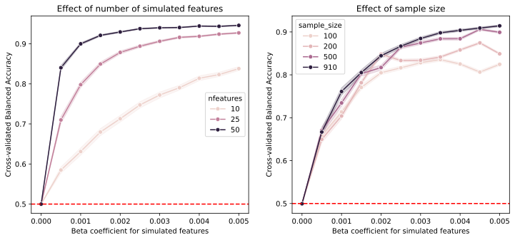
10.5 Sensitivity analysis
It’s rarely the case that there is a single analysis workflow that is uniquely appropriate for any particular scientific problem. Different methods come with different assumptions and often embody tradeoffs between different factors:
Bias-variance tradeoffs: While unbiasedness is widely thought to be an important feature of a statistical estimate, we are often willing to trade a small amount of bias in exchange for a significant reduction in the variance of our estimates. The most common example of this is the use of regularized methods that penalize model complexity; for example, regularized regression methods like ridge regression penalize the magnitude of model parameters and thus bias model parameters towards zero in exchange for potentially increased predictive performance.
Penalization tradeoffs: If one uses regularized models then there are tradeoffs in the selection of methods for model fitting (such as L1- versus L2-based penalizations, which vary in the sparseness of their model parameters). Similarly, model comparison methods (such as the use of Akaike Information Criterion (AIC) versus Bayesian Information Criterion (BIC) in model selection) differ in the degree to which they include sample size in the penalty.
Statistical assumptions: Many statistical techniques make assumptions about the distribution of the model residuals or independence of samples.
Sensitivity/specificity tradeoffs: Depending on the application we may worry more about false positives (e.g. disease diagnosis where the treatment is very risky) or false negatives (disease diagnosis where early treatment is the key to survival), and thus we may want to prioritize sensitivity or specificity.
Preprocessing tradeoffs: Preprocessing operations such as smoothing can have important impacts on the data, improving sensitivity to larger features but reducing sensitivity to features smaller than the smoothing operator.
Interpretability tradeoffs: Simple models (such as regularized regression models or decision trees) can be easily interpreted based on the parameter values, but they may not perform as well as more complex models (such as deep neural networks) that can be much more difficult to interpret.
Robustness tradeoffs: In some cases we may want to trade off some degree of sensitivity in favor of robustness. For example, parametric statistical methods are generally more efficient than nonparametric methods when their assumptions are fulfilled, but nonparametric methods provide robustness to failed assumptions at a slight cost of efficiency.
In each of these there is no answer that is universally right: the choices for any application will depend upon the goals of the researcher and the specifics of the data themselves. The goal of sensitivity analysis is to broadly test the range of reasonable/plausible analyses and assess the degree to which the outcomes change in relation to specific analytic choices.
Previous work has shown that real-world analytic variability can have major impact on the results. We (Botvinik-Nezer et al. 2020) examined this in a study that collected a neuroimaging dataset and distributed it to a large number of research teams, asking them to test a set of hypotheses using their standard methods. The results from 70 teams showed a substantial degree of variability; for 5 of the 9 hypotheses tested, the proportion of teams reporting a positive result ranged from 20-40%. The realization of the impact of analytic variability has led to the use of multiverse analysis strategies, in which multiple analytic choices are compared and their impact on the results is assessed.
10.5.1 An example of multiverse analysis
Here I will use an open ecology dataset to ask a simple question: How do bill depth and bill length covary in penguins? This might seem like an obvious question, but it’s actually an example where multiverse analysis can provide useful insight. Gorman and colleagues (Gorman et al. 2014) collected data over three years that included measurements of bill length and depth and body mass from a total of 333 Antarctic penguins, and openly shared those data. The dataset includes three different species of penguins (Adelie, Gentoo, and Chinstrap), each of which inhabits a different ecological niche and has different body characteristics. For this multiverse analysis I focused on two features of the model. First, I varied the way that species is included in the model, either leaving it out of the model, or modeling it using a mixed-effect linear model with either a random intercept or random slope and intercept across species. Second, I varied the inclusion of a number of possible covariates of interest: sex, year of data collection, island where the data were collected, and overall body mass.
One of the challenges of multiverse modeling is organizing all of the different models to be tested, which in this case comprises a set of 48 models. I generated a class that specified all of the model features, and included a method that fits the specified model and returns the results as a dictionary. I then iterated over each modeling approach with all possible combinations of covariates, fitting each of the 48 models, which took about one second to run on my laptop. One common challenge with mixed effects models is that more complex models (like random-slope models) can fail to converge when they are fitted (since they use maximum likelihood estimation and thus must be estimated using optimization), and I saw this initially when I fit the random-slope models using the default optimizer. Because the resulting parameter estimates are not trustable when the model fails to converge, I added code that tried several different optimizers when convergence failed; this resulted in convergence for all of the models.
Once we have fitted all of the models then we need to summarize the results, and a common way to do this is a specification curve plot. Figure 1.16 shows an example of such a plot for the penguin analysis. Strikingly, we see in the top panel that while most of the models show significantly positive coefficients, a subset of models show significantly negative coefficients! The lower panel shows the features of each of the models, which helps understand the cause of the difference in model parameters: The negative parameters occurred only in models where species was not included in the model.
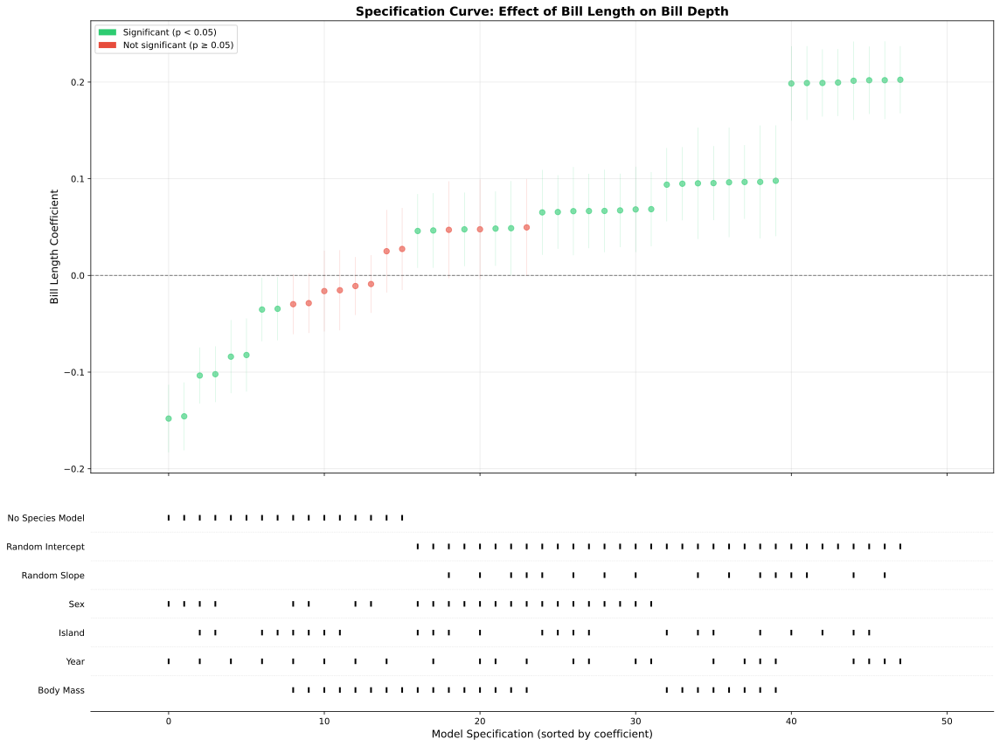
Figure 1.17 provides further insight into why this occurred. The left panel shows that across all penguins there was a negative relationship between bill length and depth. However, the right panel shows that within each species there was a positive relationship between these features; in the models that included a random effect of species, the overall differences between species were removed and the positive effect could be observed. This is an example of Simpson’s paradox, in which the pattern observed across a dataset is inconsistent with the pattern observed within subgroups of the dataset. This is usually due to the presence of a confounding variable, which in this case is species. This example shows how multiverse analysis can help bring out important features in the data and better understand the robustness of results across modeling choices.
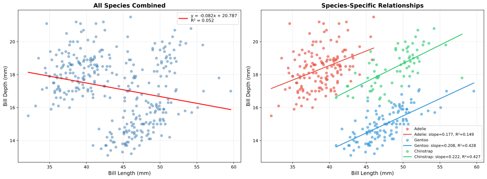
10.5.2 Sensitivity to random seeds
When using analysis methods that involve random numbers, it is essential to establish that the results are robust to different random seeds, and also to determine the degree of variability across simulations due to random seed variability. There is published evidence (Ferrari Dacrema et al. 2021) that some authors may cherry-pick results across random seeds in order to obtain better results, which we sometimes refer to as seed-hacking on analogy to p-hacking. This can be prevented by running an analysis using multiple random seeds and reporting the mean or median along with the variability across seeds.
As an example of how big an impact random seeds can have, I generated 50 synthetic datasets for a classification problem, and assessed the performance of two different classifiers that involve random numbers: a simple neural network model (Perceptron), and a stochastic gradient descent classifier 2. Each classifier was applied to the each dataset using 1000 different random seeds and their accuracy was recorded. The result (shown in Figure 1.18) was striking: although the average performance of the two models differed minimally across the 50,000 simulations (0.7276 for SGD versus 0.7280 for Perceptron), depending on the specific random seed one could find cases where each of the classifiers outperformed the other by almost 10%! This highlights the importance of quantifying the degree of variability due to random seed choice.
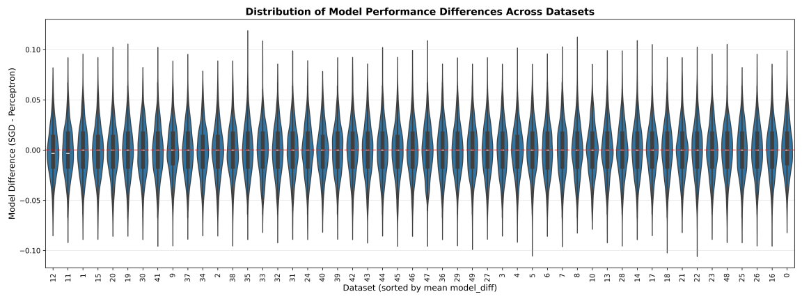
10.5.3 Sensitivity to modeling assumptions
Statistical models often make assumptions that, if violated, can invalidate any performance guarantees that come with the model. Here we will look at the commonly violated assumption of independence. While assumptions regarding normality of errors are often discussed by researchers, most methods are remarkably robust to violations of normality as long as the sample size is large enough.
Many statistical methods rely upon an assumption that the residuals from the model are independent and identically distributed (or IID). This assumption can easily be violated when the data has structure that involves relationships between observations, such as time-series data, spatial data, clustered data (e.g. data from families), or repeated measures on individuals. When this assumption is violated, the actual error rate of the method can sometimes far exceed the reported error rates computed under the IID assumption (although the parameter estimates should remain unbiased as long as the other assumptions of the model are fulfilled).
10.5.3.1 Clustered data
A common cause of failures of independence is the presence of group structure in the data, which can lead to clustered errors; that is, members of each group are more similar in their errors compared to those in other groups. Figure 1.19 shows how clustering in the data can lead to highly inflated error rates, particularly when there is a small number of clusters. This occurs because clustering leads to underestimation of the standard error that is used to compute the test statistic. There are several different ways that the impact of clustered errors can be corrected, which are differently used across different research domains (McNeish et al. 2017). These include:
Cluster-robust estimators for the standard error (commonly used in biostatistics), which correct the standard error to account for clustering in the data
Fixed effect models (commonly used in economics and social sciences), in which the clustering is modeled out using linear terms
Mixed effect models (commonly used in psychology and social sciences), in which variance components related to clustering are modeled out
Figure 1.19 shows that each of these does a good job of correcting for the effects of clustering in the data. The Python implementation of mixed effects modeling shows slightly inflated error rates, due to the fact that it uses a z-statistic which has slightly inflated error rates for small numbers of clusters, whereas the R implementation uses a correction to the degrees of freedom that corrects this.
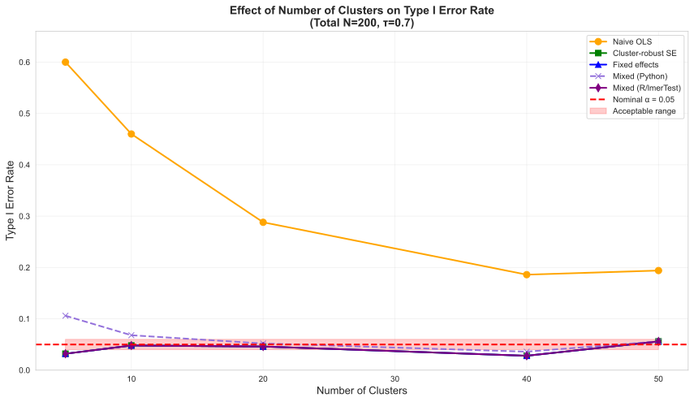
10.6 Conclusions on validation
In this chapter I’ve shown a number of different ways that one might assess the validity of scientific code. Simulations are in general a very powerful way to do this, which is the reason that they are such an essential element in the computational scientist’s toolkit.
References
For the sake of convenience I will use the term random numbers for series of numbers generated by a computational algorithm, but it is more precise to call them pseudorandom numbers, because the series will ultimately repeat after a very long time. See Chapter 3 of (Knuth 1981) for a detailed discussion.↩︎
In fact these models were both fitted using the scikit-learn
SGDClassifierfunction; the only difference is the use of the Perceptron loss versus a hinge loss (which is the standard loss used in support vector machines).↩︎